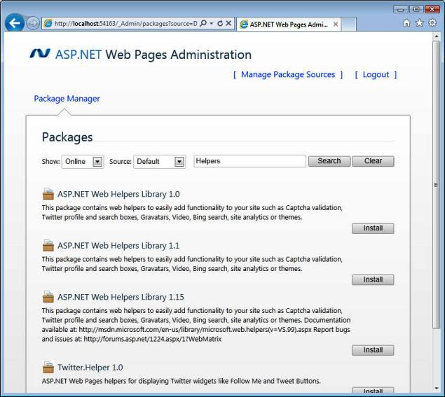

From http://www.w3schools.com (Copyright Refsnes Data)
Web Helpers greatly simplifies web development and common programming tasks.
ASP.NET helpers are components that can be accessed by single lines of Razor code.
You can build your own helpers using Razor syntax stored as .cshtml files, or use built-in ASP.NET helpers.
You will learn how to use Razor helpers in the next chapters of this tutorial.
Below is a short description of some useful Razor helpers:
The WebGrid helper simplifies the way to display data:
The "Chart Helper" can display chart images of different types with many formatting options and labels.
The Chart helper can display data from arrays , from databases, or from files.
The WebImage helper provides functionality to manage images in a web page.
Keywords: flip, rotate, resize, watermark.
With Razor you can take advantage of built-in or third party helpers to simplify the use of email, databases, multimedia, and social networks as well as many other issues like navigation and web security.
Some helpers are already included with WebMatrix, but you can install others as well.
In the W3Schools Helper Reference you can find a quick reference for included helpers and other helpers that you can install as part of a package called the ASP.NET Web Helpers Library.
If you have a web site created in WebMatrix, use the following procedure to install helpers:
(* the first time you use Web Pages Administration, it will prompt you to create a password)

From http://www.w3schools.com (Copyright Refsnes Data)